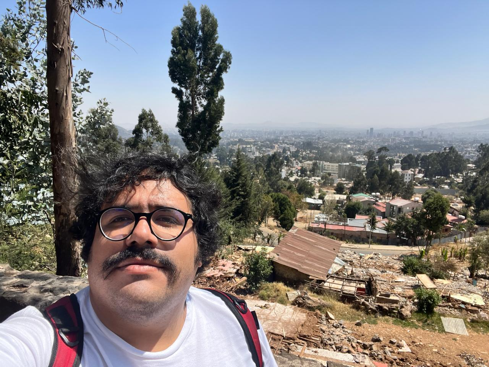
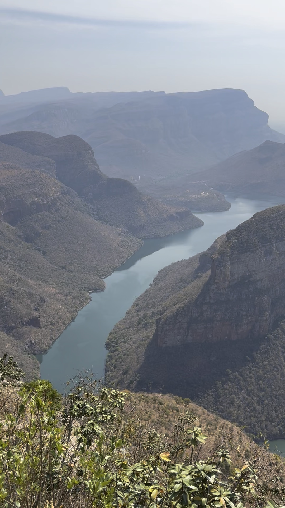
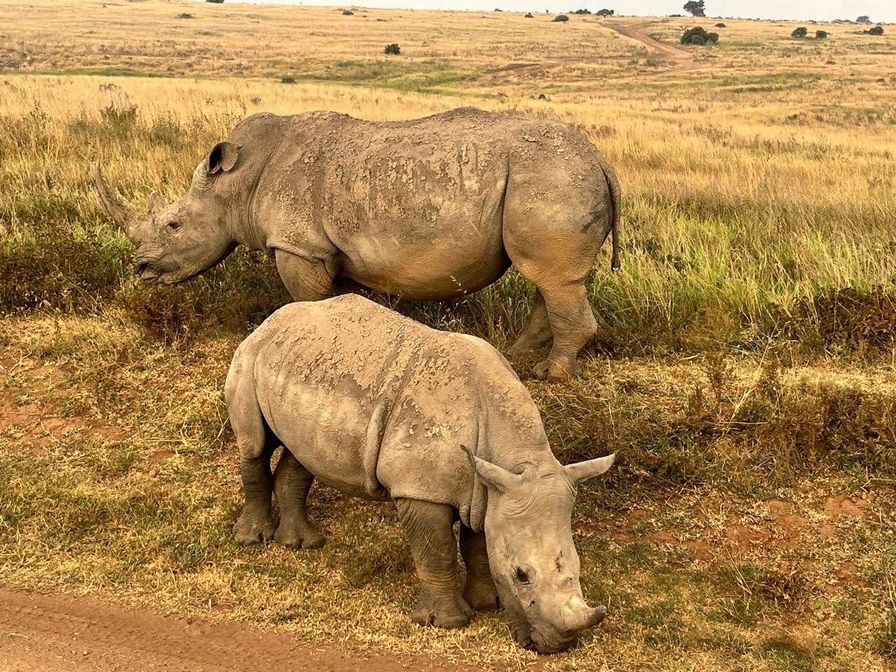
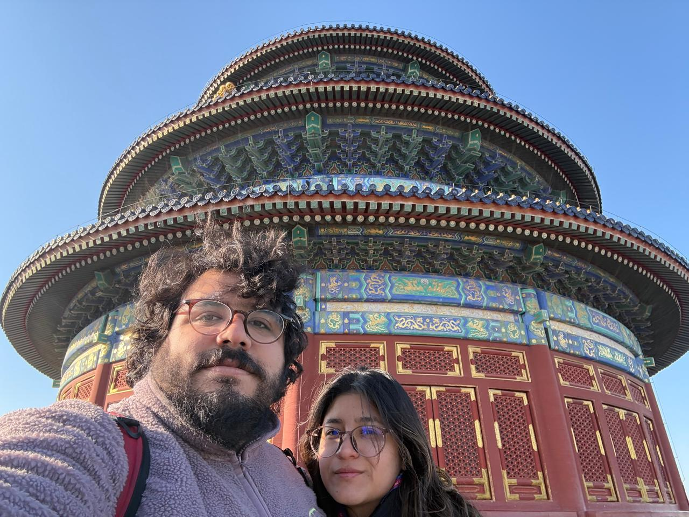
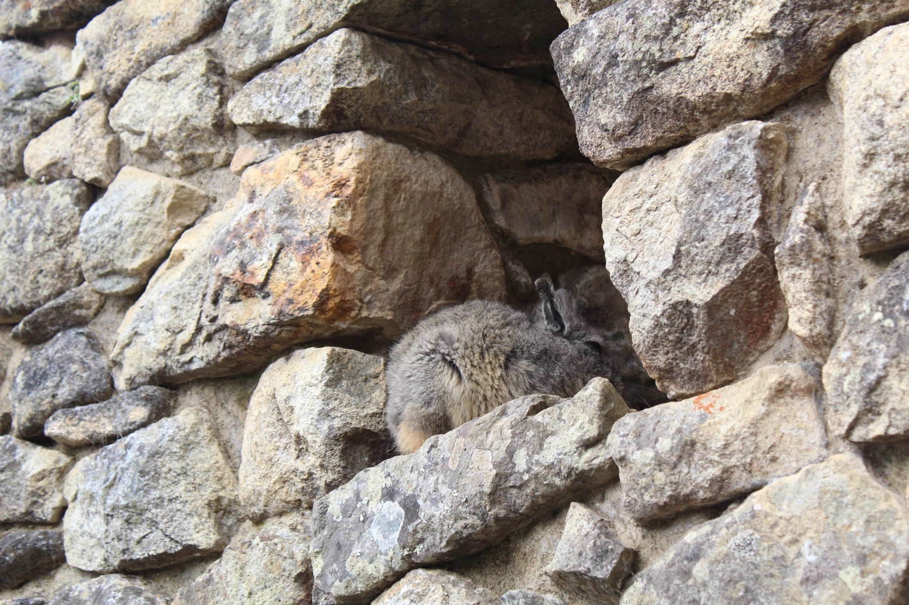

Fieldwork
Survey design, enumerator training, and data collection across three continents



Development economist with a Master's from PUCP, specializing in financial inclusion, applied microeconometrics, and experimental design. I combine rigorous quantitative methods with hands-on fieldwork experience across three continents.
Research, Industry & Consulting
Pioneered experimental methods for prototyping and research phases within the innovation lab. Designed and implemented quantitative research frameworks for projects across Intercorp's business units, collaborating with teams from banking, insurance, retail, and education.
Lead data analyst for multi-country agricultural sustainability surveys using SurveyCTO and KoBoToolbox.
Research assistant to Carolina Trivelli. Co-authored book on tax policy reform in Peru. Conducted research on financial inclusion gender gaps, migrant labor markets (Peru, Chile, Paraguay), and public procurement integrity using vignette experimental designs (USAID-funded).
Developed a composite leading indicator system for Peru's economy. Proposed hedonic price index methodologies. Served as technical evaluator for INEI's competitive research program.
Research assistance on development economics projects.
Applied economics research support.
Research on public procurement integrity using experimental vignette designs in Peruvian regional governments.
Co-authored report on women, energy transition, and health costs from heavy metal exposure in Peru.
Research projects on COVID-19 impacts, including the study on pandemic dynamics and intimate partner violence (published in Review of Development Economics).
Evaluated the university's student recruitment system and contributed to internal institutional research projects.
Peer-reviewed articles, books, working papers & work in progress
Lecturer, thesis advisor & teaching assistant at top Peruvian universities
Current courses (Economics Department):
Previous courses:
Applied Statistics for Social Sciences
Quantitative Methods, Econometrics, Macroeconomics, Microeconomics
Sampling and Parallelization
Survey design, enumerator training, and data collection across three continents



